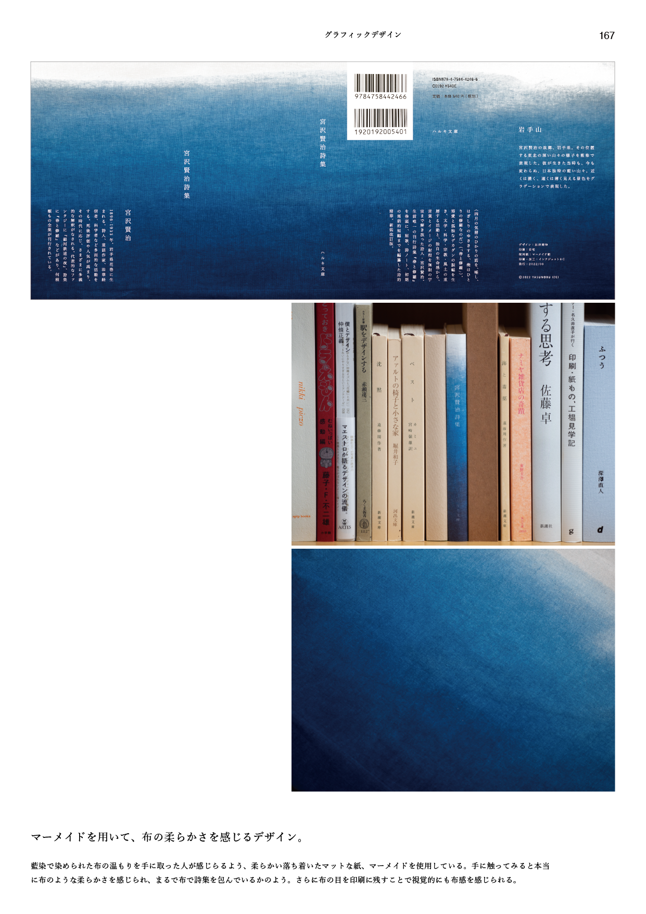

宮沢賢治詩集
KENJI MIYAZAWA

宮沢賢治詩集ブックジャケットの制作
東北の山々を藍染で表現。
『宮沢賢治詩集』のブックジャケットのグラフィックデザインを制作する課題。コンセプトを宮沢賢治が生きた、また詩の中でも何度も出てくる岩手さらには東北の山々をイメージしたものとした。実際に岩手県盛岡を含め、宮沢賢治ゆかりの地、東北一帯を訪れ、それぞれの街の背後にそびえる山々の青さに彼が生きた当時も今も変わらぬ普遍性を感じ、東北の山々の青さを表現。
その青さを表現するため、藍染を用いた。藍染による藍色グラデーションで東北の山々の深さを表現。手前の山々は濃く、遠くに行くにつれ靄がかかり薄く淡く見えるようになる。また、藍染の布の柔らかさも紙によって再現した。
